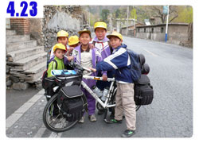

這裡沒有英雄
出發前的最後一夜，正如預料一般的，失眠了...但多少也睡了一會兒。
清晨，比五點半的鬧鐘還早起床，想去浴室沖個澡，梳洗恢復精神一下。
結果一陣反胃，空腹還沒吃早餐的胃，就不爭氣的嘔吐了一些胃酸出來。
我感覺到胃部的抽搐和身體的抖動，那嘴巴又苦又酸的味道，
一瞬間讓我清醒，讓我確定現在是真實的世界，不是在作夢，
更讓我確定，再過三個小時，我就要離開台灣，去進行冒險了。
很想開口大喊，我出運呀！因為，我要開始走出第一步了！
不論做任何事情，踏出第一步都是最辛苦的，所以大多數人往往還沒走到第一步，就退出了。
梳洗完，搭著朋友的小貨車，載著我和米莎莎到機場的第二航廈，
昨天晚上睡前最後一次確認行李，打包到凌晨一點才睡，但我知道，肯定還忘了什麼 >"<
果然才出發不到十分鐘，就發現眼鏡跟相機都裝箱在紙箱裡面，
所以我今天一直到北京領完行李為止，都要當半個瞎子，而且也不能照相做紀念 =.=
這還不打緊，起碼我有帶，只是放在不是很正確的地方。
但是阿姨去廟裡幫我求的平安符，就真的忘在房間桌上忘了拿了。
開車到一半趕緊折返回去，一大清早就慌慌張張，看來有點危險，會不會有什麼東西我還忘記的...？
就這樣一邊腦袋打結的亂想，還不到七點就抵達機場了。
到達長榮的櫃台，要托運行李以及劃位。
昨天晚上我在RST，由阿宏老師親自授課，學了更換鍊條之外，就是這輛單車的分解結合了。
總共拆卸了前輪、前擋泥板、腳踏板、前煞車、前貨架、座墊、把手之後，總算可以裝得進瓦楞紙箱裡。
其他的背包，我攜帶一個當隨身行李，另外的三個大背包、一個小背包、睡袋、睡墊、還有安全帽等東西，
則裝在另外一個瓦楞紙箱裡，所以一共是兩個紙箱，這樣行李比較單純，
要嘛就是一口氣全部都寄丟，要馬就是通通平安的拿到手上。
畫面再回到長榮的劃位櫃台。兩個紙箱一放上去過磅，顯示41.9KG，每個人的行李上限是25公斤，
所以整個超重了17公斤，雖然早知道行李會超重，但這依然超過我的估計。
扣掉單車16公斤，再加上我手提的這個包包大概是7公斤，所以這一趟的行李就起碼有30公斤以上。
真是辛苦這次要陪我一起旅行的LGS-GMT了 /_\
行李超重就得要加運費，經過長榮的協助，他們將我的行李重量上限提高到35公斤，
所以只要付7公斤的超重費用就可以了，而7公斤的費用，就高達2400塊錢。 =.=
隨後銘龍也到機場來送我一程，他自己明明說太早了爬不起來，結果還是跑來了 :D
聊聊天，小聚一下，多虧有他的協助，這次的旅行可以順利出發，
同時也讓我用不同的觀點看到很多事情的處理方式，我實在太孩子氣，銘龍這樣子才算是個大人。
9點15分的飛機，8點30的時候親一下米莎莎的額頭，要她在台灣好好照顧自己，我很快就回來。
台北飛香港一個小時就到了，剛好在飛機上吃一頓早餐，
抵達香港的時候整個人也很High！好漂亮的機場呀！
這是我第一次到香港，可惜不能跑出去，只能短短停留兩個小時，晃晃免稅商店街，
也跑去免費的機場網咖上網休息一下，等著搭12點45分往北京的飛機，
香港飛北京搭的是東方航空，空姐的素質只由用超優來形容，中國地大物博，真是人才濟濟呀(敬佩)
看看時間，理所當然的在飛機上吃了午餐，和空姐的高素質相比，
機上的餐點則是難吃到一個想翻桌的地步，講是這樣講，但我還是吃完了，
看到隔壁有沒吃完的麵包跟奶油，我還拿起來當作緊急的糧食。
可能東方航空也知道自己的餐點很難吃，所以甜點吃的居然是喜見達的冰淇淋 XD
這個落差也太大了吧～Orz
和隔壁的老伯伯(就是他給我麵包的)交換座位，換到靠窗的地方，往下一看就是中國。
第一眼只有一個印象：『好黃呀～！整個就是一個土黃色的國家。』
下午四點就抵達機場了，北京機場的動線設計明顯很不好， 尤其和我剛剛才經過的桃園機場以及香港機場相比，
一群人下飛機之後，就只有一個電扶梯和小樓梯可以走，就通通塞在那邊，出關的時候也很誇張，
整個根本就是廟會麻~_~不論是中國居民用的通道還是外國人用的通道，全部都是大排長龍，
在這邊排隊就排了好久的時間，海關在檢查完你的資料之後，
會有一個評分的功能讓你按按鈕打分數，
選項有：非常滿意、滿意、普通、速度太慢、態度不好等五項。
我連按了很多次速度太慢，按、按、按、按、按，然後才開心的出關。
領行李又是另外一個考驗，我的行李有兩個，裝背包的是一般行李，就跟大家一樣去行李轉轉區撿就好了。
但是單車分解裝箱之後，尺寸上還是大行李，要用人工的方式搬運，之前去法國，那邊的員工就搬到同樣的行李提領區，
所以我一下就找到了單車，它甚至比所有轉轉區的行李都還要早就出現，領回單車的感覺只有一句安心可以形容。
但是我在轉轉區，推著機場的推車，繞了好幾個圈子，就是沒看到我的單車被抬到哪裡去。
裝行李的紙箱則順利的從轉轉區領回，但是我的單車呢？
就這麼繞呀繞的，繞到沒有行李繼續掉出來，還是沒看到我的單車，這樣有點慌了，
趕緊找看起來像是在搬運行李的工人問一下，這一個班機有一個裝單車的紙箱，請問在哪裡？
如果他跟我說沒看到，沒聽過這東西，那就表示單車被遺留在香港了 >"<
好險他只是一臉『原來那一箱東西是你的呀』的表情，比了比領行李區的盡頭
『推到那去了！』
我哩咧，整個也差太遠了吧，領行李的轉轉區分1~8區，我的班機在第7個轉轉區提領，你把單車給我推到第1區的角落去？
但總是個實用的好訊息！道聲謝，趕緊推著推車狂奔，去提領我的單車，
剛好看到有人把它從架子上推下來的碰～！那個畫面。
馬的那是我的車耶>"< 跑過去領回來，昨天打包的紙箱已經有點破爛了，
貼了那麼多易碎品、小心輕放的貼紙，根本就是貼心酸的。
也好，就結果來講，已經平安了領回了行李、單車還有我，這樣就算到齊了。
這個時候看看手錶，大概將近下午五點，問了一下服務台，請問一下機場有沒有路可以讓單車騎到北京市的？
三個小姐互看了一下，『應該是有輔路(就是非高速公路)，可你要自己問路，我們也不會走。』
本來我的想法是要是搭機場巴士到市區，然後在路邊將車子組裝起來，
這樣的模式在法國可以成功，因為那邊是法國，不會有人趁你在忙著組合車子的時候，
悶不吭聲搶你一個背包就跑掉，然後趁你氣急敗壞去追那個人的時候，其他人則搶你的單車跟其它的行李一哄而散。
這裡是中國，是我懷有期望的一個美麗國家，同時也帶有謹慎的恐懼心。
在不確定路線要怎麼從機場騎到北京，然後我得在北京臨時找一個便宜的過夜場所，
更別提我連哪有旅館都不知道的情況下，今天的著落點在哪都還不清楚。
推著兩箱行李的推車，時間是下午五點，我思考著要在這邊花30分鐘~1小時將單車組合起來，
然後試著騎30多公里，也就是單車兩小時的路程，順利的話晚上八點到達北京市，
然後開始找旅館，度過第一個在北京的夜晚。
還是搭機場巴士，先往北京市移動，下車之後，在冒著行李被偷被搶的情況下組合單車，
然後再騎著單車閒晃找便宜的過夜場所。希望能順利發現一間便宜的旅館。
事情看來就只有兩種選擇，每一個都要付出相當的代價和一定的風險。
就在我苦惱的時候，一個穿西裝的人猛的問我一句『你這箱啥東西呀？』
抬頭看了他一眼，雖然穿著西裝，但應該是計程車在攬客的，隨口回了一聲『單車。』
『你要到北京市對吧？搭我的車吧。走～』
我都還沒有說我的目的地、甚至我都還沒答應要搭他的車，他就叫我跟他走 =.=
『先說說多少錢呀？』我沒有拒絕，我問了車資，因為這可能是我目前情況的第三條路。
『你這堆東西......算你300！』
『太貴了，我沒那麼多錢。』轉過身，推著推車要去找機場巴士的搭乘處。
果然過沒五秒鐘，他就追上來了『那你願意付多少錢呀？』
『150。』
不知道怎麼殺價的話，也不用管什麼行情多少，只要記得最高指導原則，就砍一半就對了。
我一開口，馬上換他揮揮手，掉頭就走，看來我砍得多了些，這樣也好，少了個糾纏的人。
我繼續推著推車找巴士的搭乘處，繞了一圈發現找不到，正打算回頭的時候，
發現他帶了一個高高瘦瘦的年輕人過來，一走近我，我們同時開口
『這樣吧，一口價250！』那個司機大叔說。
『200！』同一瞬間，我則喊出這個數字。
司機大叔搖搖頭，嘆口氣，『唉～那就220吧。上車？』
我接受了這個提案，司機大叔喊的價，但是載我的是那個高高瘦瘦的，長得有點像是葛優的年輕人。
『怎麼不是你載？』我馬上提出質問，難道你只負責喊價錢的嗎？/_\
『他是我弟弟，他載也一樣，你的行李多，他的車才載得下，小計程車不行。』
我一邊跟著他口中說的弟弟走，一邊回頭看著司機大叔大喊著說
『你弟弟？看起來不像呀？是不是真的你弟弟呀？』
其它的司機們小聲的笑著說，當然不像，因為是不同媽生的......
我跟著葛優，穿過機場前的馬路，往停車場地下三樓走，越走越黑暗，
什麼司機會把車停在這邊，難道攔到客人之後，還要客人走這麼遠嗎？難道是打算要在停車場的深處洗劫我？
『到了！就這台車。』
在我正準備要開始胡思亂想的時候，我看到了一輛黑頭車。
裝背包的行李紙箱放在後座，裝單車的行李紙箱則放在後置物箱，雖然因為太長凸出來了一點點，
但問題不大，還是可以正常開車，這台車果然比一般計程車要大上一些。
上了他的車，問了名字，瘦瘦高高的葛優叫作安明，北京人，開計程車接客人從機場到旅館，
剛剛那個司機大叔是少數有資格進去機場拉客人的人，所以都由他拉客人，然後其他人負責載，
然後就聊到我是哪裡人，我就說我是香港人=..=，行李裡面是單車，我打算從北京騎到西安。
聊著聊著就聊開了，安明是一個很有趣的人，我問他為什麼北京腔聽起來那麼好聽？
他就說其實就是『音長』，你們廣東人講話(他相信我是香港人了)就一個字一個音，
北京人講話音都拉很長，所以聽起來就變成這樣了。
當下馬上領悟到北京腔的訣竅，音要拉～很長。
聊開之後我問安明，載一趟客人就有兩三百塊錢，那這樣下來，一個月薪水很可觀吧？
他說沒這回事，這錢在跟我收了之後，等等都要繳回去的，每個月就領2000人民幣的薪水，
要是遇上客人好心會給點小費的，那才是真的有賺頭的地方。
聊著聊著，我就說，雖然這邊說是機場高速公路，可是怎麼開起來不怎麼高速呀？
安明說因為前面是收費站，我點頭哦～了一聲，他繼續說過站要收十塊錢，我又哦～了一聲。
跟我講這個幹嘛？介紹收費站的細節嗎？
『這十塊錢可能要請你付一下。』安明說。
挖哩 =.= 搭計程車走高速公路，過收費站還要乘客自己出過站的費用，這整個也太酷了吧！
車資規車資，收費站規收費站，分得真是清楚。
我的皮包裡面，現金就只有Bianca昨天給我的300塊人民幣，車資就花去了220，收費站又花了10塊，
那我等等還要找過夜的地方，這可該怎麼辦才好/_\？
因為他很欣賞我一個人要去騎單車，是個漢子，我馬上全盤跟安明托出，
我就說我現在身上只有300塊錢，要是你能幫我找個旅館讓我住一晚上，
那300扣掉車資還有旅館的錢，要是還有剩的，那就通通給你當小費。
安明說北京最最便宜的酒店一晚也要300人民幣，最最便宜的旅館，一晚也要158塊人民幣，
我這預算要找過夜的地方可難了。
依照等級來區分，酒店再來是旅館，那再來呢？還不到路邊那麼淒慘喔，還有一種地方叫做招待所。
一個晚上大概50多塊錢就可以了。
他撥了個電話給三姊，問問那間招待所還有沒有空房間？
結果已經全部都租出去了。
沒關係，我說只要是在北京附近就可以了，就算離天壇大概有十公里遠也沒有問題，
憑著安明是北京人，他幫我找便宜旅館，總比我騎著車瞎晃來得好。
在北京的某個地方，安明找到一間他印象中記得很便宜的飯店，
到了之後他叫我先別下車，因為我的口音不行，這樣住店的價錢比較貴，他先去問問，
我就坐在車上等他，抬頭看了一眼招牌『泓晨旅館』，是旅館耶，那應該便宜不到哪裡去吧？
沒一分鐘，就看到安明笑嘻嘻的回來，我問他這住一晚上多少錢，他笑笑的說，55塊一晚上。
真是撿到便宜了 XD 第一天就找到便宜的旅館，而且這邊很安靜，
正打算等等在店門口組合車子，然後牽到房間去放。
這樣一口氣就解決了：車子組裝、抵達北京市、第一晚的住宿這三個問題。
才開心的，馬上就有點沒那麼簡單的感覺，
旅館的櫃檯人員是個男生，他說住房需要登記，跟我拿身分證。
當然，他這邊說的身分證，絕對不會是各位手上那一張中華民國身分證。
我很心虛的拿出我的台胞證 =.= 很小聲的說『我是台灣來的』很怕被安明聽到。
然後店員就面有難色的說，台灣來的.....？那你沒有證件嗎？
安明在外面聽到，就探頭進來關心一下說，他身分有什麼問題嗎？他是香港人呀。
我馬上很愧疚的跟安明說其實我是台灣來的，店員也很好心的通融讓我住，因為這邊是不能讓外國人住的。
一晚費用55元，付了60元，結果五塊錢的零頭被扣留成住房保證金。
所以我可以給安明的小費，就只剩下我的300塊-車資220(要上繳)-收費站10元-住宿費60元=10塊人民幣。
他也是很高興的說謝謝，總是個緣分，看到我一個人要去騎車，覺得很欣賞。
然後他沒有馬上就回機場，待在這邊看著我組裝單車，想要看一看它長什麼樣子。
當我割開封裝行李的膠帶，總算可以拿出相機，開始拍今天的第一張照片。
安明看到我的車，說『這車不錯呀！不便宜吧？要不要一千塊錢？』
要是我回答大概要五千多塊人民幣，那應該不太好，所以我點點頭說差不多啦，這車蠻普通的。
他繼續問說『這車什麼牌子的？沒看過耶？』
我覺得要解釋Louis Garneau是加拿大的牌子是個很複雜的事情，所以我說我也不知道這是什麼牌子，
『覺得便宜，看喜歡所以就買了。』
多虧安明幫我找到這間旅館，讓我的第一步不至於跨得太淒慘，整體看來還算平平安安的。
在他要回去繼續上班之前，我拍了一張他的照片。

泓晨旅館的店員，名字叫做小馬，他看到我的行李其中一個是單車，而且準備要組裝，
就拿了很多的工具給我用，也幫我一起鎖螺絲。有些地方我組合錯了，還是他幫我先看到的 =.= 真是慚愧

組合到一半，隔壁一位60多歲的大叔也過來看我跟小馬在這邊努力。

邊組合邊聊天，小馬也知道我要騎單車從北京到西安(就只跟他們說要騎到西安而已)
然後大叔，他姓趙，小馬叫他趙叔，那我也叫跟著叫。
我在台灣26歲，但是在大陸就變成27歲，小馬則是25歲，小我一點。
趙叔問我是哪裡人呀？我笑著說這個答案有點敏感....
小馬則大方的幫我回答，說我是台灣來的。
趙叔聽了笑笑說，這有什麼好敏感的？
加入趙叔之後。就變成組車三人組，依序將前煞車、前輪、前擋泥板、前貨架、腳踏板、把手、座墊一一的裝回去，
因為粗魯的行李托運方式，沒有拆解的後擋泥板居然被撞彎掉了，騎的時候後輪會嚴重摩擦到擋泥板。
多虧小馬和趙叔幫我調了一下才正常。
組完之後，我自己試騎了一下，狀況完美，也把座墊調低，然後讓小馬和趙叔試騎看看我的車。

車子組好之後，就準備要牽到房間裡去，小馬沒給我鑰匙，只跟我說是144號房，
儘管下去就對了，會有人幫我開門，
說是144號房，但是可不是在1樓，更不是在14樓，而是在地下三樓，
底下大概有五十來個房間，我住是單人房，還蠻不小的。而且這邊很熱鬧，至少有八成滿。
一張單人床，一個床頭桌、一隻椅子和一台顏色偏紅的電視，天花板的油漆已經整片整片的剝落，很有味道。
放好單車，我跑回樓上，準備拿一大堆的背包下來，我拿一半，小馬幫我拿一半，
順便問小馬他今天晚上要吃什麼，能不能帶我一塊去吃，
我的想法是，反正有緣一場總是個朋友，而且跟當地人去吃飯，也會吃比較便宜的東西。
進到房間之後，就整理一下裝備，看大陸的中央新聞(這真是很酷的頻道，可惜台灣看不到。)
入夜之後的北京。好冷好冷，在室內(地下三樓)的我，都感到寒意漸漸的逼近，還好有棉被可以蓋著。
大概八點的時候，小馬敲敲門，問我吃了嗎？還沒的話就上來一起吃個飯吧。
我正好已經咕嚕咕嚕的肚子叫了，放下手邊的事情，穿著拖鞋就往上跑，
我以為小馬要帶我去附近便宜的小飯館之類的吃點什麼，我又剛好把荷包裡300塊的人民幣，才一天就揮霍光了，
所以再拿一張一百塊的，想趁吃飯的時候換點零錢。
一跑到櫃台才發現，原來不是要出去外面吃，是小馬自己炒了兩樣菜，熱了幾個饅頭，這就是晚餐了，
『這菜我自己瞎炒的，你試試看合不合口味。』
趙叔也從隔壁過來一起吃飯聊天，小馬炒了黃豆芽菜炒臘肉，還有地瓜葉，
配著又大又白的饅頭，我也吃得好飽，這比飛機上的鬼東西要好吃多了，
趙叔問我喝不喝酒？要不要來點？
我謙虛的說『我酒量還不錯，還可以喝兩杯。』
『那這下可麻煩了～小馬，到隔壁再多買兩杯。』趙叔笑著說。
就一邊啃著饅頭配著小馬炒的菜，一邊喝著趙叔請的蒙古口杯的酒(酒精38%，一杯1.5塊錢)
雖然人在國外，今天都很不敢老實的說出自己的身分，因為怕說出自己是台灣人，會帶來麻煩，
趙叔說我這樣的顧慮是對的，低調一點好，大陸人多，什麼樣的人都有，不得不小心。
閒聊中得知，原來趙叔是國民黨員，當初國軍要撤退的時候。他手上就有一張黨發給他的到台灣的機票，
但是因為老媽媽在中國，他一個人捨不得走，所以就留了下來，
也因為這樣以及他的身分，前後一共被帶去河北勞改了共三年的時間。
他問我說我當過兵沒有？我說我當過了，而且還是當憲兵。
他就問我可不可以唱幾首國民黨的軍歌給他回味一下，他好久沒有聽到了。
可是我會的都是一些憲兵歌或是機車連歌，『國民黨的軍歌』我還真不知道該怎麼唱 =.=
小馬說這附近有雜貨店，我想到口袋裡那一張100塊，要是不把它換成零錢，
那帶在身上也沒有用，因為當地人沒有錢找給你，
本來打算飯吃一吃，就去買點補給品，順便換零錢，
趙叔說，你這口音不行，一聽就露餡，到時候找一堆假鈔回來給你，
真要買什麼的話，叫小馬去幫你買，如果只是要買些方便麵，小馬這裡是旅館兼雜貨店，而且他不會找假鈔給我。
吃著鹹鹹的菜、喝著甜甜的酒，滿肚子裝滿了溫馨。
小馬問我騎到西安然後呢？這些裝行李的紙箱要不要他給我收著，我到時候總要再把東西裝箱吧？
我說我可能明天出發，就不回北京了。
『你到西安就不回來啦？那你要去哪呀？』趙叔問。
我接著走絲路，往烏魯木齊走，小馬和趙叔的筷子都停下來了。
『哪得花多少時間呀？』
『不著急，我慢慢騎，總有一天到得了的。』
『那你到烏魯木齊，也不回北京？』
『嗯(滿嘴都是饅頭跟菜)，我接著往哈薩克騎。』
『那接下來呢？』兩個人都驚訝的看著我。
『接下來往俄羅斯騎，然後往烏克蘭騎，接著是波蘭。』
『你究竟要騎去哪呀？有個終點嗎？』聽到這句話，突然有點噴飯的感覺。
『有呀！要是順利的話，就騎到法國去，然後差不多就沒力了。』大家都哈哈大笑，然後互敬一杯。
喝了一小杯酒，我整個人就有點茫然的感覺，
這裡是哪裡，是異鄉？還是故鄉？
安明、小馬和趙叔，是陌生人？還是故人？
睡前想洗澡，發現浴室是鎖著的，問了一下樓下的管理員，原來洗澡還要買澡票才可以洗，
這樣那還是免了吧，用毛巾沾濕擦擦身體就代表洗過了。
我的One Night In Beijing，除了打死一隻嗡嗡叫的蚊子，倒也沒留下什麼情。
到北京的第一天，有了很平安的開始，平安的抵達，平安的取裝備，平安的找到過夜處，
我不想做台灣之光，也不想當什麼OOO第二，或是大紅大紫、家喻戶曉、眾所屬目。
我只是一個會在出發一大早，因為緊張到乾嘔胃酸，還笑得出來的平凡人。
我是會怕第一天開始就吃苦，所以搭計程車省事，如此偷雞摸狗的普通人，
我就是我自己，去做自己想以生命為賭注，去努力、去實踐的夢想，我只想做薛德瑞。
所以這裡，沒有英雄。
繼續閱讀：4.23 小多，我是不是喬巴？

中國-人民幣－ 1：4.3 台幣
4.22 |
總計：295元 |
機場到市區的計程車資220元、收費站10元、旅館55元、給安明的小費10元。 |
|